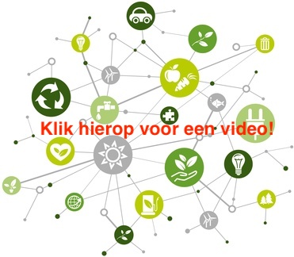
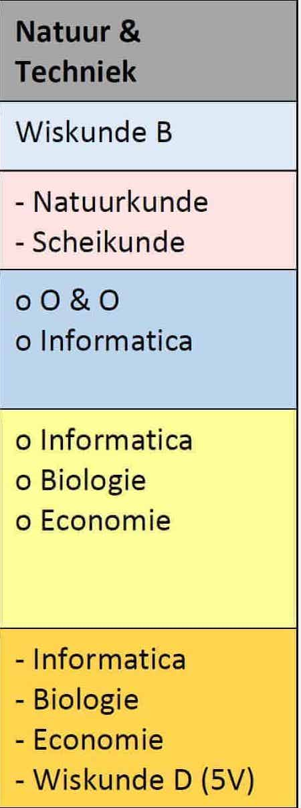
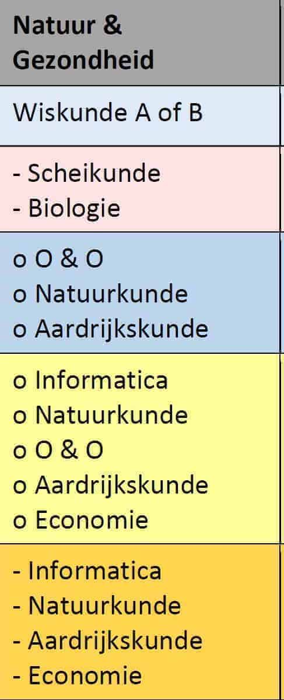

Natuur en Techniek is een van de 'profielen' in de tweede fase van het voortgezet onderwijs in Nederland, sinds de invoering van het tweede-fase-systeem in 1999. Van de vier profielen is Natuur en Techniek het meest exact. Het profiel NT bestaat uit de algemene vakken, Wiskunde B, Natuurkunde, Scheikunde, extra profielkeuzevak.Naast de voor iedereen verplichte vakken, de verplichte profielvakken N&T en de profielkeuzevakken N&T is er ook nog een zogenaamd vrij deel binnen het profiel. Buiten het profiel om kan je kiezen uit elk vak dat door jouw school wordt aangeboden. Je kunt kiezen voor een vak dat valt binnen dit profiel, waardoor je je kennis binnen je profiel als het waren nog meer verbreedt. Maar elk ander vak is ook toegestaan. Je kunt dus ook een vak kiezen wat je gewoon leuk of interessant lijkt. Vraag op school wat de mogelijkheden hiervoor zijn.
Het profiel Natuur en Techniek wordt ook wel gezien als het Bèta-profiel. Het profiel bestaat uit alle exacte vakken. In dit profiel volg je de vakken: Wiskunde B, Natuurkunde en Scheikunde. Daarnaast moet je kiezen uit de profielkeuzevakken Biologie, Wiskunde D, Natuur, Leven en Technologie en Informatica. Met dit profiel ontwikkel je jouw technische en analytische vaardigheden. Ben je goed in rekenen, hou je van het oplossen van problemen en ben je geïnteresseerd in milieu, natuur en water, dan is dit een heel geschikt profiel voor jou. Een vervolgstudie in de bouwkunde, elektrotechniek of milieukunde sluit goed aan bij dit profiel.
Natuur en Gezondheid is een van de 'profielen' (vakkenpakketten) in de tweede fase van het voortgezet onderwijs (havo en vwo) in Nederland, sinds de invoering van het tweede-fase-systeem in 1999. Het profiel wordt beschouwd als "relatief exact". Natuur en Gezondheid is gericht op medische en biologische richtingen. Je kunt met dit profiel ook de meer technische en natuurwetenschappelijke kant op door bepaalde vakken (wiskunde B en/of natuurkunde) te kiezen. De andere profielen zijn Cultuur & Maatschappij, Economie & Maatschappij en Natuur & Techniek.
 Het profiel Natuur en Gezondheid is een profiel dat zich richt op gezondheid, chemie, milieu, water, planten en dieren. In dit profiel volg je de verplichte vakken Biologie en Scheikunde. Daarnaast is het verplicht om Wiskunde A of Wiskunde B te volgen. Ook kies je uit de profielkeuzevakken Natuurkunde, Natuur, Leven en Technologie en Aardrijkskunde. In dit profiel leer je over het onstaan van dingen en hoe ze werken. Je ontwikkelt je technische en analytische vaardigheden. Ben je goed in exacte vakken en ben je geïnteresseerd in de gezondheid en het milieu, dan is dit een heel geschikt profiel voor jou. Een vervolgstudie in de voedingsmiddelentechnologie, biomedische wetenschappen of gezondheidswetenschappen sluit goed aan bij dit profiel